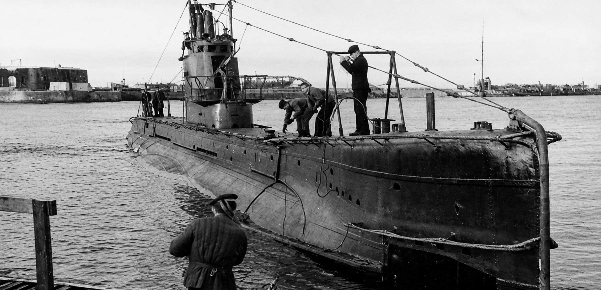
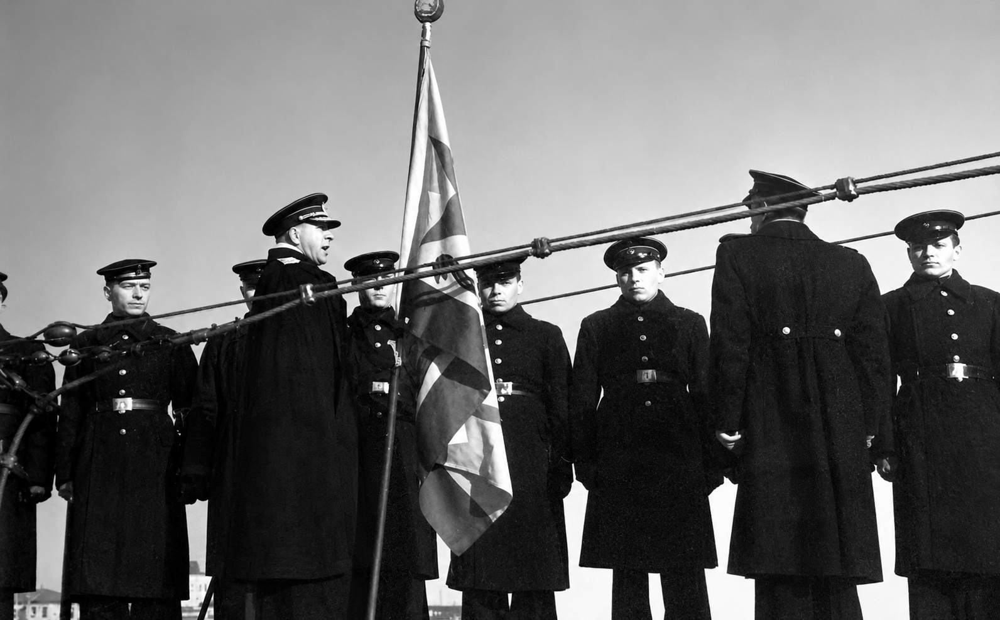

ПОДВОДНАЯ ЛОДКА Щ-303

Подводная лодка «Щ-303». Предвоенное фото 1940 г.
«Щ-303» – одна из самых прославленных лодок Балтийского флота времён Великой Отечественной войны. Вступила в строй в 1933 г. Первым командиром стал А. В. Трайкин, а в 1940-м на должность был назначен И. В. Трайкин. В 1938–1939 гг. командиром БЧ-1 на «Щ-303» служил П.С. Кузьмин.

Вручение экипажу Щ-303 гвардейского знамени. 03.03.1944
В кампании 1941 г. субмарина не участвовала – завершала капитальный ремонт на Балтийском заводе. Основной боевой поход вышел в июле 1942-го. Затем был ещё один поход, в котором были потоплены два транспорта, а также нанесены повреждения транспорту и кораблю охранения. По итогам года за успешные действия экипаж был удостоен звания гвардейского.
Военную кампанию 1943 г. «Щ-303» начала первой. Она вышла из Кронштадта 8 мая, преодолела Голландский рубеж, добралась до Нарген-Порккалаудского заграждения, но преодолеть его не смогла и несколько раз ложилась на дно из-за близости кораблей противника.
В условиях светлых ночей лодке долго не удавалось подняться на поверхность, чтобы отравить донные мины. В конце концов, из-за неисправности шумопеленгатор перестал работать, подводники остались без горячей пищи и чая. Сутки готовили из соленой морской воды. Запас патронов регенерации воздуха и кислородных баллонов подходил к концу, а экипаж страдал от удушья.

Командный состав Щ-303. (П.М. Мишин, Г.Г. Моргунов, М.А. Шейнин и др.) Кронштадт. 1942 г.
21 мая старшина трюмных машинистов Борис Галкин совершил переход на торпеду. Оставив насос, он попытался закрыть переборочные двери, а затем попал в цистерну высокого давления. Субмарина быстро всплыла на виду у вражеских противолодочных кораблей. Галкин выбрался из отсека, смог добраться до перископа, но его схватили за ноги и утащили. В этот момент лодка совершила срочное погружение, и Трайкин скомандовал срочное погружение, и Трайкин скомандовал аварийный сброс грунта, и лодка в беспорядочном положении погрузилась на дно.
Лишь через несколько часов удалось спастись. Экипаж выжил. Лодка восстановила боеспособность и вновь вышла в походы в 1944-м году, завершив свой путь в 1945-м.

На центральном посту Щ-303. Командир лодки И.В. Трайкин (слева), П.С. Кузьмин (стоит справа). Кронштадт. 1942 г.
В течение нескольких суток экипаж проводил ремонт и постепенно восстанавливал энергетику, но из-за срабатывания подводного маяка и разрыва шлангов донести до Гогланда уже не мог. В конце концов, его буксировали в Кронштадт. Война для «Щ-303» завершилась в 1945 г., вернувшись в состав Балтийского флота.
В сентябре 1945-го «Щ-303» была выведена из боевого состава флота. До 1954 г. служила как учебная лодка. Судьба её героического экипажа навсегда останется в памяти.